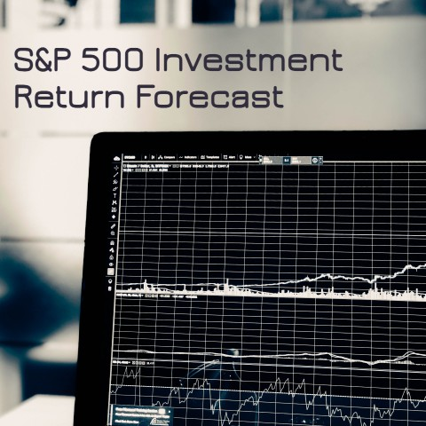
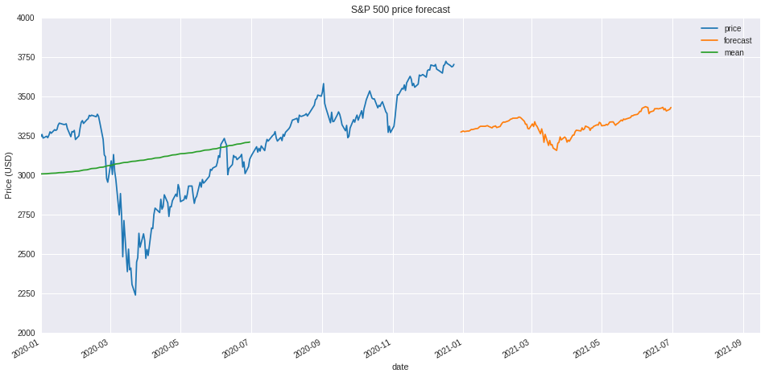

Forecasting Model

The S&P 500 is a market-cap-weighted index of 505 large-cap U.S. stocks, representing
approximately 80% of the market value of the U.S. stock market. Often synonymous with
"the market" in the U.S., the S&P 500 is the closest thing to a default U.S. stock
index. Its largest components by weight are mega-cap stocks such as Apple, Microsoft, Amazon.com,
Facebook and Google (Alphabet). The S&P 500 was the benchmark of the first index fund, and the first ETF.
An S&P 500 ETF is an inexpensive way for investors to gain diversified exposure to the U.S. stock
market, though it has been especially volatile in 2020 amid the coronavirus pandemic and massive
disruptions in the global economy.
(Source: investopedia.com)
From 2009 S&P 500 showed remarkable growth with average annual return rate of 10%. COVID crisis in 2020 had minor impact compared to 2009, and growth is back on track. Remarkably, S&P 500 return rate has no 'debt' like before 2001. Meaning, we can expect to see S&P 500 stable growth over next years.
Python code to build chart shown bellow:
import pandas as pd
import numpy as np
from matplotlib import pyplot as plt
# read data from csv file and set-up df
df = pd.read_csv('sp500.csv', index_col = 0, usecols = [0,4],
parse_dates = True, thousands = ',', decimal = '.',
dtype = {'Close' : 'float16'})
df = df.sort_index(ascending = True)
df.index.names = ['date']
df.columns = ['price']
# calculate average price and investment return over 250 trading days
df['mean'] = df.rolling(window = 250, center = True).mean()
df['irr'] = df['price'] / df['mean'].shift(periods = 250) - 1
df['risk'] = df['irr'].ewm(com = 1000, min_periods = 250).std()
df['irr_ema'] = df['irr'].ewm(halflife = 2000, min_periods = 1000).mean()
df['momentum'] = df['irr'] - df['irr_ema']
df['debt'] = df['momentum'].ewm(span = 2000).mean()
# daily price and irr chart
plt.style.use(['seaborn-darkgrid', 'seaborn-notebook'])
fig, (ax1, ax2) = plt.subplots(2, 1, sharex = True, figsize = (12, 8))
ax1.set_xlim(pd.Timestamp('1996-01-01'), pd.Timestamp(df.index.max()))
# daily price
ax1.set_title('S&P 500 daily closing price')
ax1.set_ylabel('Price (USD)')
ax1.plot(df.index, df['price'], color='#002868', marker=',', linestyle='None')
ax1.plot(df.index, df['mean'], color='#002868', linewidth = 2)
ax1.axvline(pd.to_datetime('2009-01-15'), color='#BF0A30', linewidth = 20, alpha= 0.2)
ax1.axvline(pd.to_datetime('2020-04-01'), color='#BF0A30', linewidth = 6, alpha= 0.2)
ax1.set_ylim(bottom = 0, top = 4000)
ax1.tick_params('y', colors='#002868')
# risk level
ax1r = ax1.twinx()
ax1r.set_ylim(bottom = 0, top = 4000)
ax1r.set_ylabel('Price (USD)')
ax1r.grid(None)
# investment return rate
ax2.set_title('S&P 500 Investment Return Rate (IRR)')
ax2.set_ylabel('Investment Return (%)')
ax2.plot(df.index, df['irr'], color = '#BF0A30', marker = ',', linestyle = 'None')
ax2.plot(df.index, df['irr_ema'], color = '#BF0A30', linewidth = 1)
ax2.axvline(pd.to_datetime('2009-01-15'), color='#BF0A30', linewidth = 20, alpha= 0.2)
ax2.axvline(pd.to_datetime('2020-04-01'), color='#BF0A30', linewidth = 6, alpha= 0.2)
ax2.set_ylim(bottom = -0.4, top = 0.4)
ax2.tick_params('y', colors='#BF0A30')
ax2.set_yticklabels(['{:,.0%}'.format(x) for x in ax2.get_yticks()])
#ax2.axhline(0, color = '#222222', linewidth = 0.5)
# mirror y-axis
ax2r = ax2.twinx()
ax2r.set_ylabel('Debt rate')
ax2r.set_yticklabels(['{:,.0%}'.format(x) for x in ax2.get_yticks()])
#ax2r.plot(df.index, df['debt'], color = '#002868', linestyle = '--')
ax2r.fill_between(df.index, df['debt'], alpha=0.5)
ax2r.set_ylim(bottom = -0.4, top = 0.4)
ax2r.tick_params('y', colors = '#002868')
ax2r.grid(None)
# save chart
ax2.set_xlabel('Date')
plt.savefig('price.png')
plt.show()
plt.close()Individual components showed very low correlation with price. For this reason Machine Learning (ML) open source library scikit-learn for used for supervised learning model.
Following components were used as features for the model: 'momentun' - current investment return (current price from average price last year) deviation for Exponential Moving Average (EMA), 'debt' - calculated values that shows how long and how deep deviation from standards occur, 'trend' - direction of 'debt' change, 'mood' - specific time period describing changes in investors mood.
Current price forecast is in the range of 3200 - 3300 USD indicating that current S&P 500 price (close to 3750 USD) might be overvalued. However, it should be noted that unprecedented support from governments pushed stock higher for long period of time. Therefore, current price might be justified (2021-Jan-01).
Python code to build chart shown bellow:
from sklearn.linear_model import LinearRegression
from sklearn.model_selection import train_test_split
# prepare dataset
df_skl = df.loc[:,['firr', 'momentum', 'debt', 'trend', 'mood']].dropna()
y = df_skl.firr.values
X = df_skl.drop('firr', axis=1).values
# train model
X_train, X_test, y_train, y_test = train_test_split(X, y,
test_size = 0.3,
random_state = 42)
reg_all = LinearRegression()
reg_all.fit(X_train, y_train)
df_skl['forecast'] = reg_all.predict(X)
# estimate forecasted price
df_new = df.merge(df_skl[['forecast']], on='date', how='outer')
df_new['forecast'] = df_new['mean'] * (1 + df_new['forecast'])
df_f = df.iloc[-250:,:]
X_forecast = df_f.loc[:,['momentum', 'debt', 'trend', 'mood']].values
df_f['forecast'] = reg_all.predict(X_forecast)
df_f['forecast'] = df_f['mean'] * (1 + df_f['forecast'])
# merge forecast to original dataframe
df_f.index = df_f.index + pd.Timedelta("365 days")
df_f = df_f.loc[:,['forecast']]
df = df.merge(df_f, on='date', how='outer')
# plot values on the chart
df.plot(y=['price','forecast', 'mean'],
figsize=[16,8], ylim=[2000,4000],
xlim=['2020',df.index.max()-pd.Timedelta('100 days')],
title = 'S&P 500 price forecast', ylabel = 'Price (USD)')Thank you for viewing my project. Any comment, suggestion, please adress to me by email bellow.